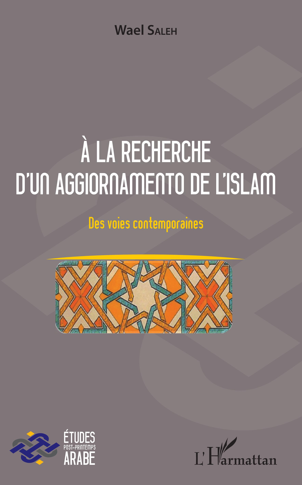
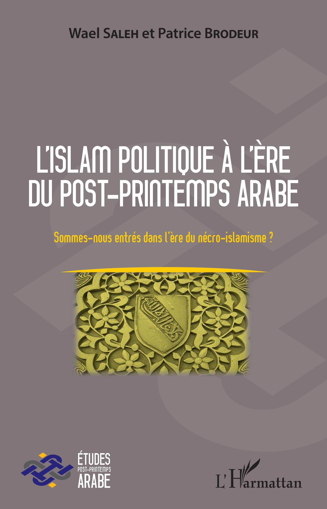
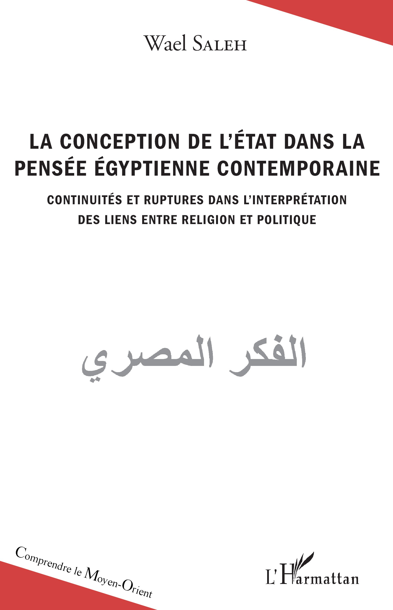
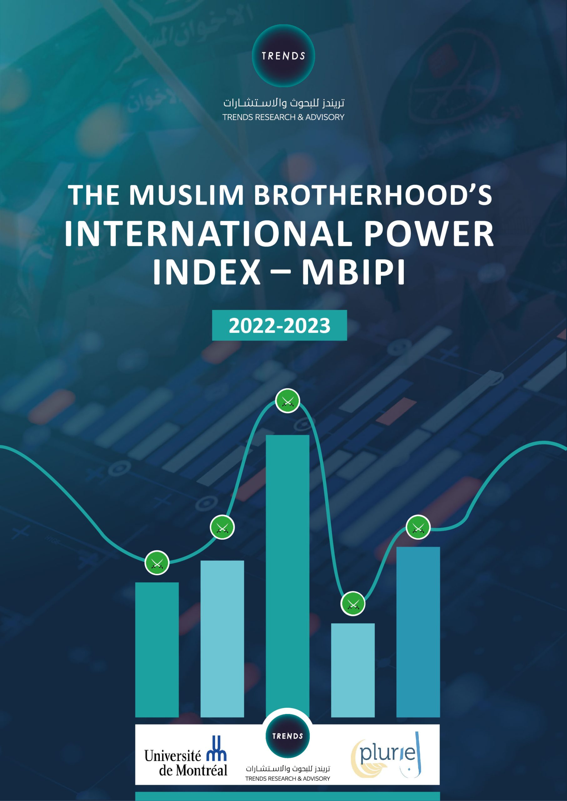
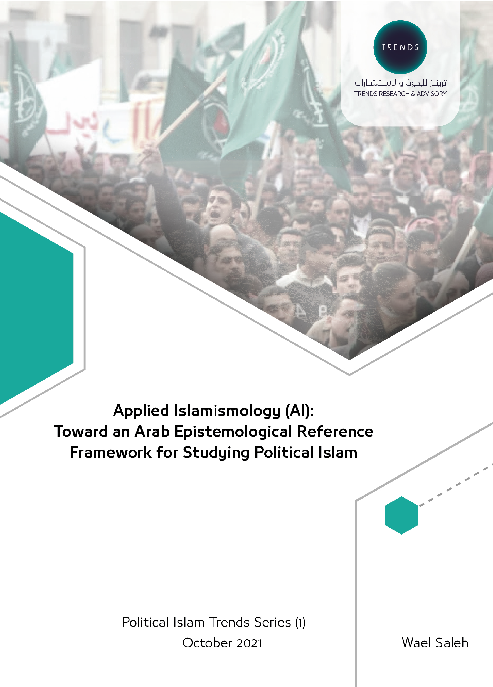
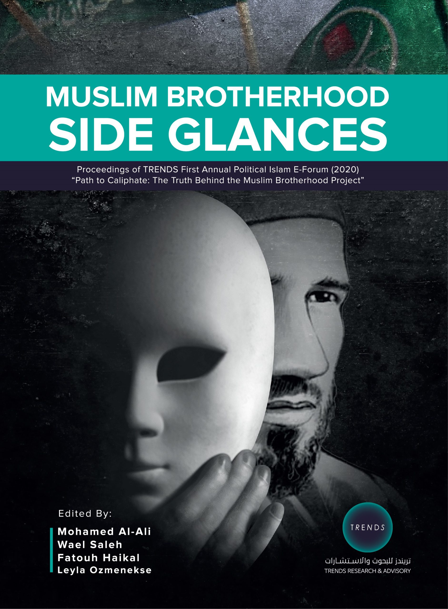
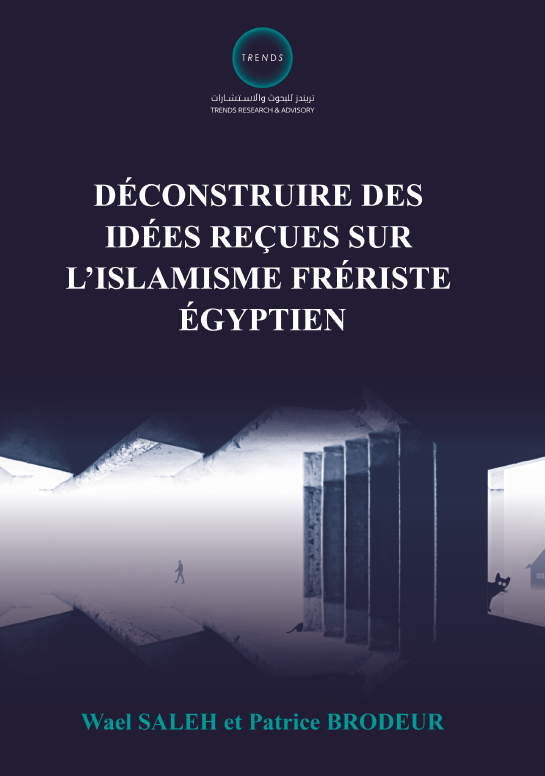

Islamic Studies
Discourse analysis, hermeneutics, and comparative reading of contemporary Arab-Muslim thought.
Ph.D. in Applied Human Sciences · Islamic Studies and Political Science
Two decades of scholarship at the intersection of political Islam, post-Arab-Spring transformations, and the geopolitics of religion, translated into books, peer-reviewed studies, and advisory work for universities and international research institutes.
Research Centers and Academic Memberships
About
Dr. Wael Saleh is an associate professor at the Institut d’études internationales de Montréal (IEIM, UQAM), and Political Islam Affairs Advisor at TRENDS Research & Advisory, where he also directs the organization’s offices in Canada and France.
His research traces the religio-political imagination of the contemporary Arab world: the conception of the state, the place of religiosity in public life, and the long shadow of Islamist movements before and after the Arab Spring. He is the co-founder of the Institute of Post-Arab Spring Studies and head of PLURIEL’s research group on the epistemological and methodological challenges of studying violence in the name of Islam.
Across five monographs, dozens of peer-reviewed chapters and articles, and frequent international media commentary, his work seeks one thing: to make the study of political Islam more rigorous, more humane, and more legible across linguistic and cultural divides.
Areas of Specialization
Four interlocking fields of inquiry, applied across academia, advisory practice, and public discourse.
Discourse analysis, hermeneutics, and comparative reading of contemporary Arab-Muslim thought.
How religio-political ideas circulate, mutate, and contend across the Arab world and its diasporas.
Islamism, post-Islamism, the Muslim Brotherhood’s international dynamics, and pathways of radicalization.
Pluralism, interreligious dialogue, and the place of faith in late-modern public spheres.
Methods and recurring themes
Experience and Employment
From Montreal classrooms to international advisory work, bridging academic research and applied policy analysis.
Political Islam Affairs Advisor; Director, Canada and France Offices
Leading flagship publications including the Muslim Brotherhood International Power Index (MBIPI), and overseeing TRENDS’ research presence in Canada and France.
Associate Professor, Institut d’études internationales de Montréal (IEIM)
Teaching geopolitics of religion, post-2011 Arab worlds, and Islam and modernity.
Researcher and Teaching Assistant, Institute of Religious Studies (IER)
Senior research advisor on political Islam, post-Arab Spring trajectories, and contemporary Arab thought.
Associate Researcher, Observatory on the Middle East and North Africa
Long-running affiliation with one of Canada’s premier strategic-studies chairs.
Co-founder and Director
Selected Publications
A selection from a body of work spanning monographs at L’Harmattan, peer-reviewed chapters and articles, and TRENDS research publications, in English, French, and Arabic.

L’Harmattan · 2018
Des voies arabes contemporaines · ISBN 978-2-343-14830-4

L’Harmattan · 2017
with Patrice Brodeur · ISBN 978-2-343-13669-1

L’Harmattan · 2017
Comprendre le Moyen-Orient · ISBN 978-2-343-11353-1

TRENDS · 2024
English and French editions

TRENDS · 2021
Toward an Arab Epistemological Reference Framework for Studying Political Islam

TRENDS · 2022
edited with Mohamed Al-Ali, Fatouh Haikal, Leyla Ozmenekse

TRENDS · 2024
with Patrice Brodeur
Université de Sherbrooke · 2010
Convictions idéologiques ou considérations opportunistes ? · Mémoire de maîtrise
Peer-Reviewed
A selection of refereed contributions appearing in journals and edited volumes across France, Canada, and the Arab world.
RG View on ResearchGateBeyond Representation: Systemic Epistemic Alterity and the Architecture of Knowledge in the Contemporary Academy
ResearchGate · 2024
The Muslim Brotherhood in Egypt
ResearchGate · 2024
Les études de la radicalisation menant à la violence au nom de l'islam : cartographier les acteurs théoriques pour mieux comprendre les enjeux épistémologiques et éthiques
ResearchGate · 2020
The Black Swan and the Fall of the Black Turban Regime: Rethinking the Future of Iran and the Middle East
TRENDS Research and Advisory
Du droit musulman au droit humain au nom de l'islam
MIDÉO 34 · 2019
The right of religious freedom in contemporary Islamic thought
Taylor & Francis · with Patrice Brodeur
Le fiqh politique des Frères musulmans égyptiens et leur conception de l'État
Google Books · Book Chapter
Selected publications in Arabic
Funded Research and Project Collaborations
Selected research grants and project collaborations conducted with Patrice Brodeur, Aurélie Campana, Dominique Avon, and Saʻd al-Dīn al-Hilālī, among others.
Social Sciences and Humanities Research Council of Canada
Co-investigator with Patrice Brodeur (principal applicant).
Social Sciences and Humanities Research Council of Canada
Co-investigator with Patrice Brodeur (principal applicant).
Bureau Recherche-Développement-Valorisation, Université de Montréal
Institute of Religious Studies, Université de Montréal
Conferences and Teaching
Plenary addresses at PLURIEL international congresses, sessions at the Acfas annual congress, and graduate courses in Montreal.
Courses taught
February 2024 · Abu Dhabi
PLURIEL and TRENDS Research and Advisory.
December 2024 · Lyon, France
Faculté de Théologie, Lyon, invited address.
May 2022 · Université Laval
Co-organizer, 89th Congrès de l’Acfas.
June 2018 · Rome
2nd International PLURIEL Congress, “Islam et appartenances.”
March 2019 · CÉRIUM, Montréal
Co-organizer, Université de Montréal.
October 2018 · Montréal
Festival du Monde Arabe de Montréal.
Memberships and Profiles
Professional profile and updates
Expert profile, Political Islam advisor
 Dandurand
Dandurand
Associate researcher, UQAM
Francophone Association for Knowledge
University Research Platform on Islam
Université de Montréal
Research profile and publications
France
Get in touch
Open to academic collaborations, advisory engagements, and invited talks. Email is the fastest way to reach me.
Based in
Montréal, Canada
Working between
Canada · France · UAE
Languages
Arabic · French · English